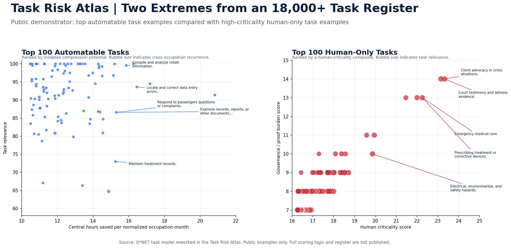
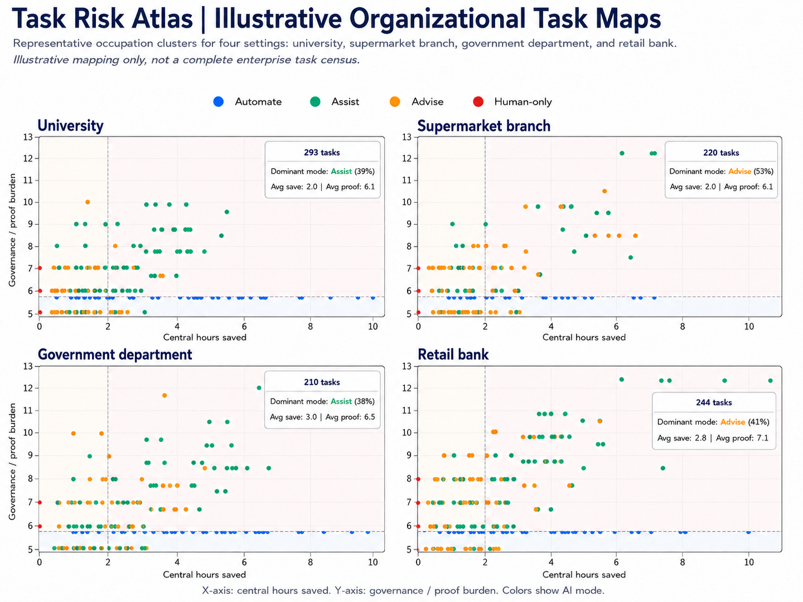

Task Risk Atlas
Where AI pressure actually lands: the task layer.
Jobs are too blunt. A single occupation can contain routine documentation, AI-assisted analysis, advisory judgment, and work that must remain visibly human. The Task Risk Atlas shows how AI pressure concentrates inside the work itself.
Occupation rankings are useful headlines, but weak operating tools.
AI adoption does not hit whole jobs evenly. It changes task portfolios. Some tasks can be compressed. Some can be supported. Some create new verification work. Some should not be automated, even when a model can produce a plausible answer.
The Task Risk Atlas separates these layers so leaders can see where AI changes work, where it increases proof burden, and where human accountability must remain explicit.
A demonstrator, not the instrument.
This page shows the logic of the Task Risk Atlas without publishing the full register, scoring method, boundary-audit rules, or pattern library. The purpose is to make task-level analysis visible without turning the underlying diagnostic into a downloadable template.
Four dimensions, simplified for public use.
The full diagnostic uses a richer task register. The public version reduces the method to four plain-language dimensions.
Compression potential
Where AI may reduce task time, accelerate preparation, or shift routine production into controlled workflows.
Proof burden
Where AI use creates checking, review, documentation, audit, escalation, or accountability requirements.
AI mode
Whether a task is better understood as Automate, Assist, Advise, or Human-only under a defined scenario.
Human criticality
Where care, safety, professional judgment, legitimacy, legal standing, or visible responsibility remain central.
The extremes show why the task layer matters.
The graphic below compares selected task examples from the two ends of the register: high-compression automation candidates and high-criticality human-only tasks. It is a public demonstrator, not the full diagnostic output.

Task maps can be built for real operating settings.
The Task Risk Atlas can also be used to create illustrative task maps for different organizational settings. The example below compares four familiar environments: a university, a supermarket branch, a government department, and a retail bank. Each panel maps a representative cluster of tasks by modeled compression potential and governance or proof burden.
These examples are deliberately simplified. They are not complete enterprise task censuses and should not be read as definitive assessments of any named organization. Their purpose is to show how the diagnostic works: different organizations have different task-risk shapes, different pilot zones, and different proof-burden concentrations.

What the public examples are meant to show.
Structured records and document checking
Tasks involving records, reports, discrepancies, data correction, operational logs, and structured document handling often show high compression potential.
- High compression potential
- Usually bounded and reviewable
- Good pilot candidate when controls are in place
Assisted professional work
Many professional tasks are not safely automatable but are highly assistable. AI can accelerate drafting, search, synthesis, review, and preparation while humans remain accountable.
- Medium to high compression potential
- Human review required
- Workflow redesign more important than tool access
Crisis, care, testimony, and safety
Some tasks remain human-only because the central issue is not model capability. It is responsibility, legal standing, embodied action, trust, or professional duty.
- High human criticality
- High proof burden
- Automation boundary should remain explicit
- The logic of task-level AI analysis
- Selected examples of compression and human criticality
- Why job-title rankings are not enough
- How AI pressure creates both efficiency opportunities and proof burdens
- The full task register
- The full scoring formula
- The automation-boundary audit rules
- The full pattern library, mappings, or diagnostic workbook
The question is not whether AI affects work. The question is which tasks can be safely compressed, which tasks need stronger proof, and which tasks must remain human.
The Task Risk Atlas is designed for leaders who need to move from AI enthusiasm to operating model discipline: pilot selection, governance design, workforce planning, proof burden mapping, and automation-boundary review.